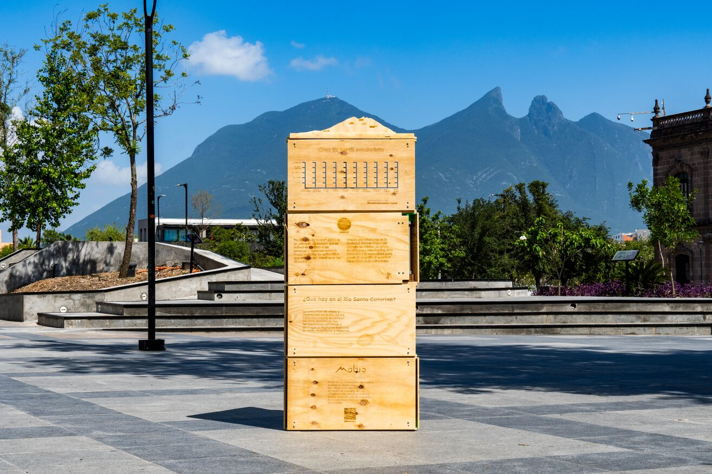
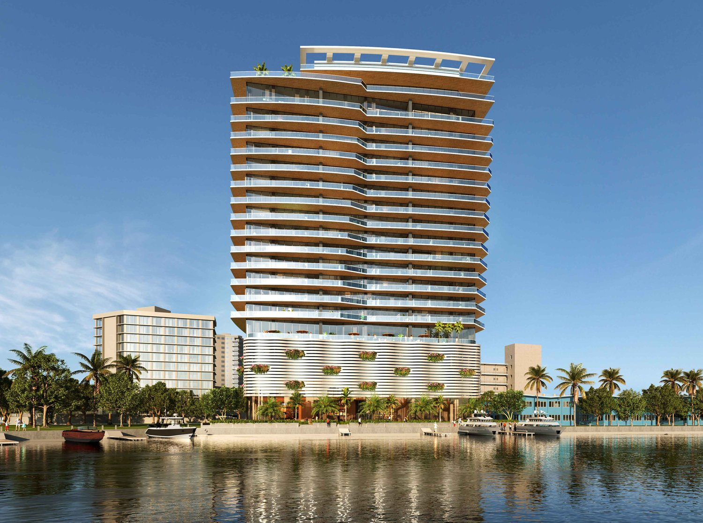
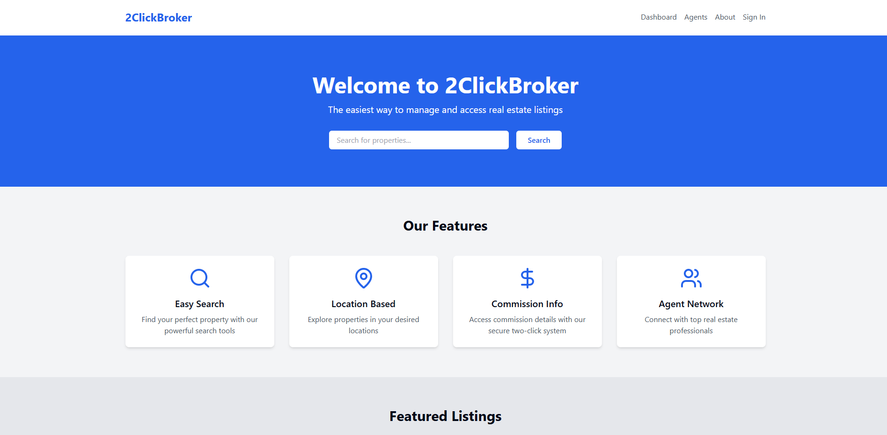
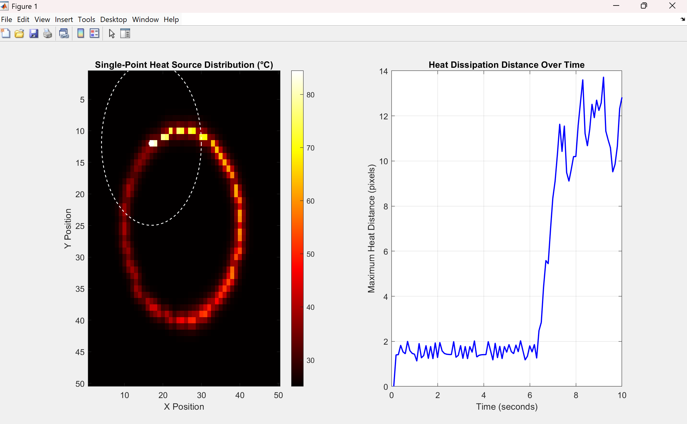
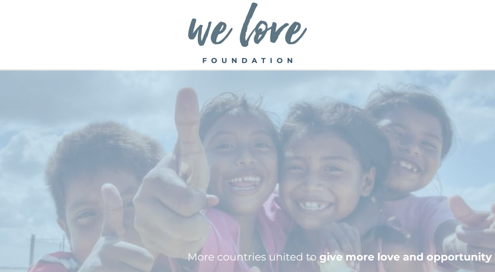
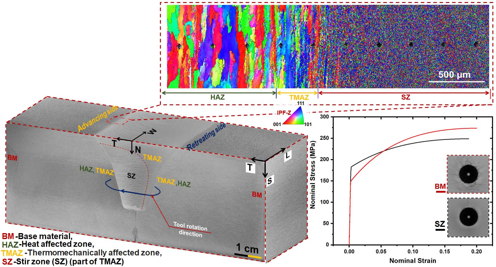

Carlos Cardenas
Interdisciplinary Engineer
Achievement History
Educational Growth (2021 – Present)
- Bachelor’s Degree in Interdisciplinary Engineering (Materials & Physics Concentration) from Florida International University (FIU) with a GPA of 3.65/4.00.
- Completed courses in Statics, Dynamics, Materials Engineering, and Manufacturing Processes with top grades, demonstrating disciplinary grounding.
- Proficiency in programming languages (C++, Python) and web design frameworks (Django, Node.js), enhancing computational problem-solving skills (Built this website by myself as well purely in HTML/CSS/JS).
- Experienced in CAD tools like SolidWorks and Rhino, as well as simulation software like Matlab and Simulink, applying these to real estate design challenges.
Professional Experience
- Development Associate, Integra Investments (May 2022 – April 2023):
- Secured permits and approvals for real estate projects, demonstrating interdisciplinary integration.
- Conducted cost-benefit analyses and contributed to material selection.
- Collaborated with stakeholders to ensure project alignment and efficiency.
- Project Manager, WellDuo (April 2023 – Present):
- Managed real estate projects from concept to construction, solidifying expertise in project management.
- Performed cost analyses and streamlined construction processes, showcasing critical awareness.
- Research Assistant, Cold Spray and Rapid Deposition Lab (August 2024 – Present):
- Focused on advanced manufacturing techniques, including WDED and FSAM.
- Gained hands-on experience in metallographic analysis, reinforcing technical depth.
Mission and Vision Statement
Mission Statement
I am an interdisciplinary engineer committed to advancing sustainable real estate and materials development through innovative frameworks such as AI, CAD, and advanced fabrication. My mission is to create impactful, forward-thinking solutions that optimize processes and drive efficiency.
Vision Statement
To lead advancements in sustainable real estate and materials science by creating scalable solutions that enhance affordability, reduce environmental impact, and push the boundaries of technological innovation.
Professional Statement
My journey as an interdisciplinary and global engineer is marked by a combination of technical expertise, practical experience, and a global outlook. Living and working in diverse environments, I have developed critical awareness of the multifaceted challenges in real estate and engineering. Through advanced education and hands-on research, I have honed my ability to integrate knowledge across disciplines, preparing me to tackle complex, real-world problems.
- Global Awareness: Experiences in Miami and international settings shaped my ability to address global challenges in engineering and development.
- Interdisciplinary Expertise: Integration of materials science, CAD design, and real estate development highlights my preparedness for innovative solutions.
- Technological Leadership: Prototyping with AI and generative tools demonstrates my commitment to future-ready engineering.
Artifacts and Annotations
1. Mobio: Modular Micro-Museum for Environmental Awarenessin Monterrey
Description: The experience in Monterrey as part of the Fab City Challenge provided invaluable insight into the rich biodiversity of urban environments, inspiring the creation of a modular micro-museum prototype that fosters sustainable connections between cities and their natural surroundings.
Annotation: Demonstrates cross-disciplinary teamwork and innovative approaches to sustainability challenges.
2. Comprehensive Experience in Real Estate Development
Description: Worked in several real estate development projects across the South Florida area doing everything from Concept Selection to Financial Modeling to Construction Management and beyond. Basically involved in every step of the process from buying the land to turning in a completed building.
Annotation: Illustrates a blend of technical precision and strategic business insights.
3. 2ClickBroker
Description: Developing an AI-assisted platform for Real Estate Listings, an integrated platform for Real Estate Sales Agents to find listings, secure compensation with various tools for ease of use to navigate new NAR regulations, and consolidate data analytics for real estate sales purposes.
Annotation: Highlights proficiency in AI-driven innovation and future-ready solutions. (Home Page shown, ask for further details as needed, cannot share publicly due to Business Confidentiality Requirements)
Link to our Website (Currently Not Published, Under Construction)
4. MATLAB and Simulink Simulations
Description: I have extensive experience using MATLAB and Simulink for engineering simulations and data analysis. My work includes developing thermal simulations to model heat distribution and transfer using finite difference methods, providing precise insights into material behavior under varying conditions. I also created a live weather data processing system that collects, visualizes, and analyzes real-time environmental data, demonstrating expertise in predictive analytics and environmental monitoring. Additionally, I explored advanced matrix and vector manipulations to solve complex linear algebra problems, such as eigenvalue computations and matrix transformations, supporting robust mathematical modeling. Through optical simulations, I analyzed focal points and light paths to deepen my understanding of geometric optics. These projects highlight my ability to leverage MATLAB and Simulink for solving interdisciplinary engineering challenges with a focus on accuracy and innovation.
Annotation: Showcases versatility and application of engineering principles and widely used softwares to solve complex problems.
5. We Love Foundation and Charitable Works
Description: The We Love Foundation, formerly known as the I Love Venezuela Foundation, is a tax-exempt 501(c)(3) umbrella organization dedicated to creating and channeling resources for non-profit initiatives worldwide. Its mission is to provide individuals with increased love and opportunities, aiming to influence social transformation through compassion and unity. The foundation focuses on health, education, and social development, assisting established NGOs by supplying necessary resources and fostering a global community of volunteers and donors. Since its inception in 2013, the We Love Foundation has expanded its reach to over 11 countries, including Venezuela, Mexico, Honduras, El Salvador, Colombia, Peru, Brazil, Turkey, Israel, the Philippines, and various regions in the United States, serving more than 650,000 beneficiaries and evaluating over 250 NGOs. My role in the organization is to lead the website and digital infrastructure efforts, assist in outreach to potential donors and volunteers, and assist in the organization and logistics of our annual events.
Annotation: Reflects a commitment to social issues and shows application of leadership and organization, as well as technical skills for the creation of the foundation's website.
6. Research at Cold Spray and Rapid Deposition Lab
Description: As a Research Assistant at the Cold Spray and Rapid Deposition Lab, I have been deeply involved in advanced metallographic procedures and the analysis of cutting-edge manufacturing processes. My work focuses on the characterization of samples produced through techniques like Wire-Arc Direct Energy Deposition (WDED) and Friction-Stir Additive Manufacturing (FSAM). I have gained hands-on experience in polishing, etching, and optical microscopy to analyze grain structures and material properties. My contributions include optimizing etching techniques, conducting microhardness testing to evaluate material integrity, and studying the thermal gradients and microstructural variations in additive manufacturing processes such as Wire Arc Additive Manufacturing (WAAM). These efforts have furthered the understanding of process-structure-property relationships, enabling insights critical for aerospace, naval, and industrial applications.
Annotation: This artifact highlights my expertise in advanced materials research, including process optimization for novel additive manufacturing techniques. It demonstrates my ability to integrate theoretical knowledge with practical skills in material characterization and analysis. My work on WAAM and FSAM showcases my commitment to pushing the boundaries of manufacturing science to develop sustainable, high-performance materials for industrial applications. This experience reflects my proficiency in interdisciplinary engineering and the pursuit of innovative solutions in the field of advanced manufacturing.